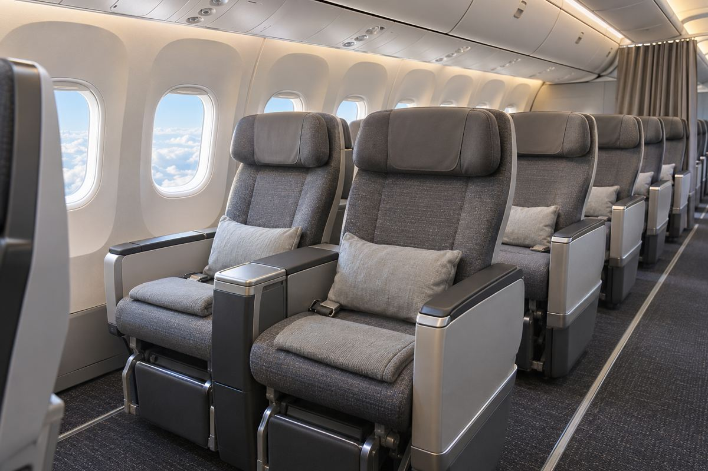

항공 / EXPLAINED
에미레이트 프리미엄 이코노미, 유럽·영국 41개 취항지 중 31곳으로 확대
파리 샤를드골은 10월 25일 추가됐다. 목적지 수와 개별 편의 객실 제공 여부는 기준이 다르다.

에미레이트는 11월 10일 유럽과 영국 41개 목적지 가운데 31곳에서 프리미엄 이코노미를 이용할 수 있다고 발표했다. 파리 샤를드골은 10월 25일부터 새로 포함됐다. 31곳이라는 범위는 발표 시점의 노선망을 설명하며, 11월 10일 하루에 31개 노선이 동시에 바뀌었다는 뜻은 아니다. 이 객실을 원하는 승객은 출발 도시뿐 아니라 여행일과 해당 항공편의 실제 객실 구성을 확인해야 한다.
두바이를 거점으로 하는 에미레이트는 유럽과 아시아·아프리카 등을 연결하는 항공사다. 프리미엄 이코노미는 일반 이코노미보다 넓은 좌석과 다리 공간, 별도의 식사 등으로 차별화하는 객실 등급이다. 항공권의 등급과 기종은 서로 연결되지만 같은 개념은 아니다. 같은 기종이라도 개별 기체의 개조 여부와 구체적인 좌석 배치가 달라 객실 선택지가 바뀔 수 있다. 회사는 최신 객실을 넣는 개조 프로그램이 지금까지 108대에 적용됐다고 밝혔다.
새 A350의 일부 좌석에 관한 설명에는 높이를 조정할 수 있는 프라이버시 스크린, 전동 다리 받침, 머리 받침과 무선 충전이 포함됐다. 이 설명은 최신 A350의 객실 기능에 관한 것이다. 유럽 목적지 전체에서 동일한 좌석을 제공한다는 확인과는 범위가 다르다. 독자는 원하는 기능이 있다면 객실 소개뿐 아니라 예약 단계에서 해당 편에 적용되는 좌석표를 같이 봐야 한다. 브랜드가 같더라도 좌석 기능이 기체별로 달라질 수 있다.
시간표 수치의 단위
회사는 겨울 시간표에서 두바이와 유럽을 하루 평균 78편으로 연결한다고 설명했다. 별도로 케이프타운, 나이로비, 푸껫, 하노이, 마닐라, 도쿄 나리타, 아크라 등에 주 31편을 추가한다. 하루 평균과 주간 증편은 집계 기간이 다르다. 두 수치를 더해 하루 공급이라고 표현할 수는 없다. 유럽발로 두바이에서 다른 노선에 갈아타는 여행객은 구간별 운항일과 현지 시각을 맞춰야 전체 대기시간을 알 수 있다.
이번 확대의 의미는 중간 등급 객실을 찾을 수 있는 출발지의 범위가 넓어진다는 데 있다. 편집부의 해석으로는 장거리 두 구간을 여행할 때 한 구간만 업그레이드하는 선택과 전 구간 같은 등급을 택하는 선택을 비교할 수 있다. 다만 뒤 구간에도 같은 등급이 판매되는지와 연결 운임 조건을 확인해야 한다. 좌석 공급 확대만으로 요금 차이가 줄거나 특정 좌석이 남아 있다고 판단할 근거는 없다.
목적지 31곳은 취항 도시의 개수다. 한 도시로 하루 여러 편이 있어도 목록에서는 한 곳으로 센다. 따라서 이를 유럽 출발 전체 항공편이나 판매 좌석의 31/41 비율로 바꿀 수 없다. 연결편까지 합친 좌석 수를 비교하려면 편별 기재와 운항 횟수 정보가 더 필요하다.
출발지 31곳이라는 수치는 지금의 도입 범위를 보여 준다. 자료에는 모든 편명과 날짜의 객실 배치가 정리돼 있지 않고, 항공기 교체 때 적용할 개별 예약 처리도 없다. 구매할 때 좌석 등급, 구간별 운항사, 기재 변경 안내를 확인하면 새 서비스의 범위를 자신의 여행에 맞게 읽을 수 있다. 파리 적용일과 발표일을 구분하는 것도 이 과정의 일부다.